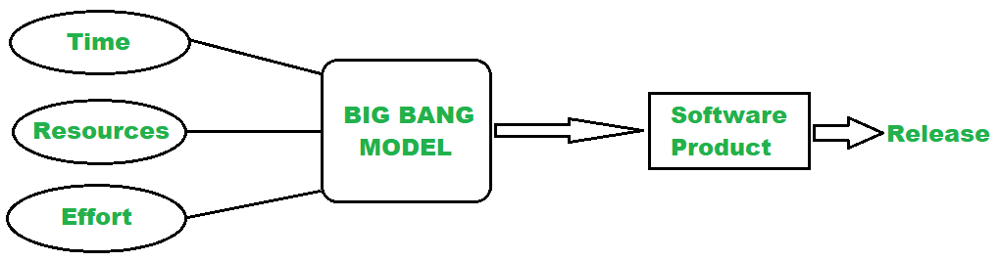

Suurepaugu arendusmudel on SDLC mudel. Seda on peetud kõige lihtsamaks SDLC mudeliks, sest see nõuab kõige vähem planeerimist.
Selle mudeli järgi arendatakse projekti järk-järgult, kliendi nõuetega kooskõlas.

| Head | Vead |
|---|---|
| Ei vaja palju planeerimist | Pole sobilik suurtele projektidele |
| Odav, kui eesmärgid on selged | Võib osutuda kalliks, kui eesmärgid ei ole selged |
| Lihtne teostada | Ebasobilik pikaajaliseks projektideks |